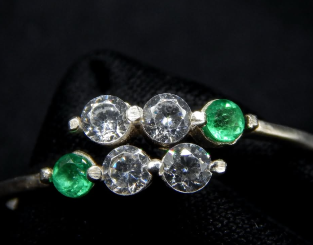

Bogotá, Colombia · Desde 2022
Más que Joyería.
Un Legado.
Nacimos de la convicción de que Colombia —tierra de las esmeraldas más
extraordinarias del mundo— merece joyería artesanal a la altura de esa riqueza.
"No vendemos joyas.
Creamos objetos de estatus que trascienden generaciones."
Cada pieza nace de una conversación. Escuchamos tu visión, la entendemos en profundidad y la convertimos en una joya que proyecta exactamente quién eres y lo que valoras.
Limitamos intencionalmente nuestra producción. Cada pieza Kambó es diseñada y fabricada individualmente para quien la encarga — nunca de forma masiva.
Operamos 100% dentro de Colombia. Eso nos permite acceder a las mejores esmeraldas directamente en origen y acompañarte en cada etapa del proceso.

creadas
Nuestro Origen
Pasión por las Piedras,
Compromiso con la Excelencia
Kambó Fine Jewelry nació del convencimiento de que Colombia —país que produce entre el 70 y el 90% de las mejores esmeraldas del mundo— merece joyería artesanal a la altura de esa riqueza natural.
Llevamos más de dos años creando piezas de alta joyería exclusivamente dentro de Colombia, completando de forma impecable más de 200 pedidos para clientes que exigen exclusividad y diseño excepcional en cada detalle.
Cada pieza comienza con una conversación. Escuchamos tu visión, seleccionamos la piedra perfecta y trabajamos con destreza tanto en plata Ley 950 como en oro de 18k. Nuestro fuerte reside en las magníficas esmeraldas colombianas, pero también engastamos con maestría diamantes clásicos, diamantes negros y amatistas.
Crear mi pieza →Si deseas certificación analítica para tu esmeralda, lo gestionamos. Solo pagas el costo exacto del laboratorio independiente — sin un peso más. Creemos que debes saber exactamente lo que posees.
Solo entra a una pieza Kambó lo que nosotros mismos estaríamos orgullosos de portar: esmeraldas, diamantes y amatistas elegidas bajo criterios estrictos de brillo, claridad e impacto visual excepcionales.
Nuestra operación 100% colombiana nos permite acompañarte en cada etapa del proceso, con comunicación directa y sin intermediarios. Más de 200 proyectos completados son nuestro mayor aval.
Próximo Paso
¿Lista tu próxima
pieza de estatus?
Contáctanos y cuéntanos tu visión. Sin presión — solo asesoría honesta para ayudarte a crear la pieza perfecta que llevará tu nombre por generaciones.